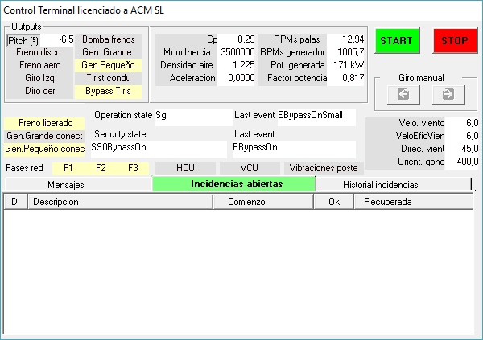
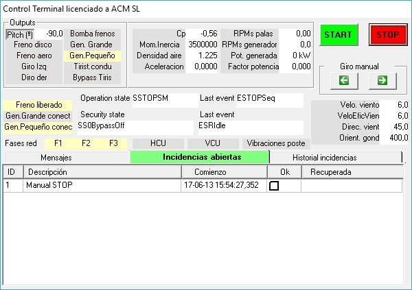

O Controlador permitedois modos de funcionamentoem relação àorientação da nacelefunções:
a) Manual.
b) Automático.
No modo "Manual", o operador pode usar os botões no "Control Terminal" associado à "Rotação manual". Veja a figura a seguir.

Fig. 1
Na produção, estes dois botões são "inativo", como mostrado na figura 1 acima.
Para fazê-losativo," é necessário desconectar a turbina eólica da grade usando o botão "STOP".

Fig. 2
No modo de orientação "Manual", o Controlador evita que os botões de rotação estejam ativos se houver um problema com o sistema elétrico.
Mesmo no modo manual, o Controlador continua a monitorar o número de voltas dos cabos de alimentação e não permite que o máximo seja excedido em qualquer direção.
No modo "Automático", o controlador toma decisões sobre o desbobinamento de cabos com base em vários critérios.
No modo automático, o comportamento do sistema de orientação leva em conta o estado da turbina eólica. O objetivo principal é manter a turbina eólica sempre orientada para a direção do vento e também reduzir o consumo de energia (os motores de orientação consomem energia que é retirada da energia produzida - se estiver em produção - ou tirada da rede, se o gerador estiver desconectado).
Se a velocidade do vento for inferior a um limite ("Mínimo de orientação"), então não é aconselhável gastar energia orientando a turbina eólica para o vento. Um valor típico para este limite é 2,3 m/s. Acima deste limite, o critério é perguntar se faz sentido orientar a nacele primeiro, uma vez que o vento provavelmente aumentará o suficiente para tentar um processo de conexão logo em seguida.
Se a decisão é "orientar" a nacele, então o critério seguinte diz respeito aovoltas dos cabos. Se, no início do processo de orientação, essas curvas são maiores do que um determinado limite (outro parâmetro), então, antes de iniciar a orientação, faz sentido relaxar os cabos, antecipando que o vento pode mudar de direção na direção de atingir esse limite. Uma vez desfeito, o processo de orientação continua. Um valor típico para este limite está relacionado ao número máximo de voltas que os cabos podem suportar. Se este número é, digamos, 3,5 voltas, então um bom limite para relaxar antes de orientar, e antes de tentar se conectar, é cerca de metade disso, digamos 2 ou 2,5 voltas.
Naturalmente, o Controlador, em modo Automático, monitora continuamente o limite máximo de giros de cabo, mas não atua a menos que o interruptor limite seja ativado. Se isso acontecer, a Turbina do Vento irá parar imediatamente, gravando um "incidente" que gera uma sequência de nível 5 STOP. Este nível STOP é o mais suave, o que significa que o Controlador irá mudar o Pitch para obter um valor de potência negativo (por isso, o Power Train começará a desacelerar), até que a velocidade do Gerador atinja o valor síncrono, no ponto em que o Bypass contator irá abrir com o mínimo de tensão (ou seja, quando a corrente que passa por ele é zero ou mínimo, minimizando possíveis arcos elétricos dentro dele), e o Power Train continuará a desacelerar até que sua velocidade atinja um valor ocioso. Nesse momento, se a velocidade do vento for válida para conexão, o desbobinamento automático dos cabos ocorrerá como explicado acima.


No modo automático, o comportamento do sistema de guinada leva em consideração o estado da turbina de vento. O objetivo principal é manter a WindTurbina na produção o maior tempo possível e também reduzir o consumo de energia (os motores de guinada consomem energia que é emprestada da potência produzida – se na produção – ou tirada da grade se o gerador estiver desconectado).
Se a velocidade do vento está abaixo de um limite (parâmetro), então não é sábio gastar energia colocando o WindTurbina frente ao vento. Um valor típico para este limite é 2,3 m/s. Acima deste limite, os critérios são: faz sentido orientar primeiro o Nacelle como, muito provavelmente, o vento vai crescer o suficiente para tentar um processo de corte em um curto espaço de tempo.
Se a decisão é "orientar" a nacele, então os próximos critérios se referem às voltas dos cabos. Se no início do processo de orientação estas voltas são maiores do que um determinado limite (outro parâmetro), então, antes de iniciar a orientação, faz sentido desapertar os cabos. Uma vez sem torção, o processo de orientação continua. Um valor típico para este limite está relacionado ao número máximo de voltas de suporte dos cabos. Se este número é, digamos, 3,5 voltas, então um bom limite para desenroscar antes de orientar, e antes de tentar cortar, é em torno de metade, digamos, 2.
Naturalmente, o Controlador, em modo automático, monitora continuamente o limite máximo de voltas para os cabos, mas não atua a menos que o interruptor limite seja ativado. Se isso acontecer, a WindTurbina irá parar imediatamente, registrando uma "incidência" que gera uma STOP Sequência de nível 5. Este nível de STOP é o mais suave, o que significa que o Controlador irá alterar o Pitch para obter um valor negativo de potência (por isso o DriveTrain começará a desacelerar), até que a velocidade do Gerador atinja o valor síncrono, no ponto em que o Bypass contator será aberto com o mínimo de tensão (ou seja, zero ou mínima corrente passando por ele, minimizando os arcos dentro dele), e o DriveTrain continuará desacelerando, até que sua velocidade atinja um valor ocioso. Nesse momento, se a velocidade do vento for válida para cutins, o desempate automático dos cabos ocorrerá como explicado acima.